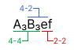

Two-factor interactions#
In designs with four-level factors and two-level factors, the four-level factors are composed of three pseudo-factors are the form \((a,b,ab)\). Therefore, in the defining relations of such designs, words can contain two types of letters: factors and pseudo-factors. From there, we can define three types of interactions between two factors:
4-4: interaction between two pseudo-factors
4-2: interaction between a pseudo-factor and a two-level factor
2-2: interaction between two two-level factors
The figure below shows an example of a word containing all three type of interactions. If we consider the word \(abcdef\), and the two four-level factors \(\mathbf{A}=(a,b,ab)\), and \(\mathbf{B}=(c,d,cd)\), then the word becomes \(A_3B_3ef\).
{kind=link}
Two-factor interactions are said to be clear when they are not aliased with any main effect or any other two-factor interaction [1]. Since, in four-and-two-level designs, there are three type of interactions, an interaction can be clear in three different ways:
4-4 clear: not aliased with any other M.E. or 4-4 interaction
4-2 clear: not aliased with any other M.E. or 4-2 interaction
2-2 clear: not aliased with any other M.E. or 2-2 interaction
If an interaction is, at the same time, 4-4 clear, 4-2 clear, and 2-2 clear, we say that it is totally clear. For simplicity, we define the clarity of an interaction as the different ways it can be clear. The clarity of the interactions of a design is a good indicator of how well the interactions can be evaluated in a model. Indeed, if a lot of interactions are clear, it means that they can be estimated freely in a model.
To vizualise this information easily, we use the fatld.design.Design.clarity() method of a design, which generates a clarity matrix.
In this matrix, the rows are the types of the interactions and the columns correspond to what they are clear from.
>>> import fatld
>>> D = fatld.Design(runsize=32, m=2, cols = [17, 21, 25, 29, 31])
>>> D.clarity()
4-4 clear 4-2 clear 2-2 clear Totally clear
4-4 9 9 2 2
4-2 36 4 36 4
2-2 8 15 9 2
Any type 53 28 47 8
We see in the example above that the 32-run \(4^22^{6-5}\) design presented has 36 4-2 interactions that are clear from 4-4 interactions, and that, among them, only 4 are totally clear.
To get a specific clarity value for an interaction, you can use the fatld.design.Design.clear() method, which is equivalent to extracting a single value from the clarity matrix.
>>> import fatld
>>> D = fatld.Design(runsize=32, m=2, cols = [17, 21, 25, 29, 31])
>>> D.clear(interaction_type="4-2", clear_from="4-4")
36